LightRAG turns your documents into a knowledge graph and answers
questions with a dual-level retrieval paradigm — comprehensive like GraphRAG, but cheaper and
faster, with incremental updates instead of full rebuilds. Here are the seven core ideas, then a real
end-to-end install wired to OpenAI's gpt-5-mini, gpt-5.5 and
text-embedding-3-small, with a Qdrant vector store.
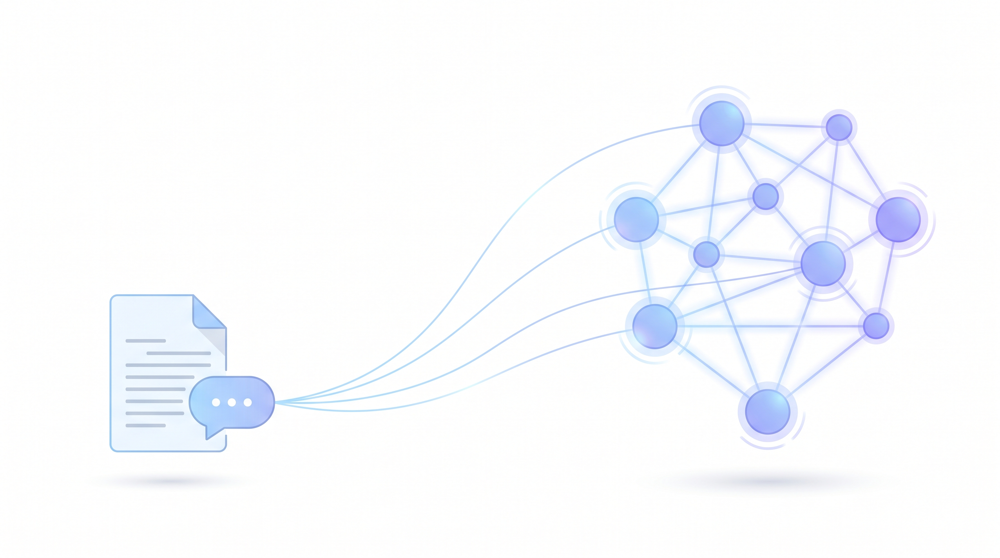
Conventional RAG chops a corpus into flat chunks and retrieves the few most similar to the question. That fragments answers whenever the response depends on relationships between entities. GraphRAG fixes comprehensiveness but is expensive — community detection and traversal across hundreds of API calls, and a full rebuild whenever data changes. LightRAG (HKUDS) keeps the knowledge graph but makes it cheap and incremental.
Indexing extracts entities and relationships per chunk, writes a compact key-value profile for every node and edge, and deduplicates across the corpus. Retrieval is dual-level: low-level keys fetch specific entities, high-level keys fetch broad themes, and the two are fused with the graph's one-hop neighbours and a vector search. New documents merge into the graph as a simple union — no rebuild.
I ran it end-to-end as an API server with OpenAI's GPT-5 family and a Qdrant vector store:
gpt-5-mini for extraction, gpt-5-nano for keywords, gpt-5.5 for the final
answer, and text-embedding-3-small (1536-dim) for embeddings. No GPU required — all the heavy compute
is API-side. Below is how it works, plus the real setup issues and their fixes.
Retrieval-augmented generation grounds a language model in your own documents so it hallucinates less. That is easy when the answer lives in one passage, and hard when it depends on how several entities relate across many documents. Plain vector RAG returns disconnected chunks and leaves the model to guess how they fit together.
LightRAG keeps the answer grounded but adds structure: during indexing it uses an LLM to pull entities and relationships out of every chunk and assemble them into a single knowledge graph. At query time it reads from that graph on two levels at once — specific entities and broad themes — and fuses the result with a vector search. The published architecture below shows the whole loop: graph-based text indexing on the left, the dual-level retrieval paradigm on the right.
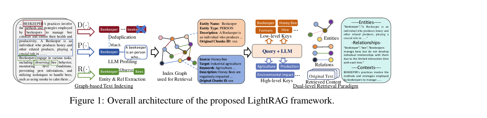
Indexing is three LLM-driven steps per chunk. Recog extracts the entities and the relationships between them. Prof ("profiling") writes a short index key and a summarizing value for each node and edge, so retrieval is both fast and precise. Dedupe merges identical entities and relations that appear in different chunks, which keeps the graph compact and cheap to operate over.
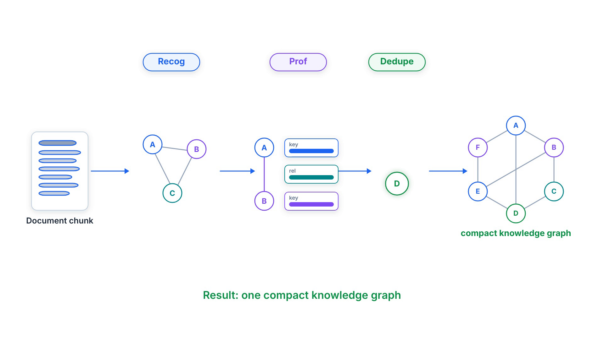
The payoff is that the graph captures multi-hop structure across the whole corpus, and the key-value profiles give retrieval a precise, vectorizable surface to match against — a better fit than either pure embedding similarity or brute-force community traversal.
At query time LightRAG works on two levels at once. Low-level retrieval targets specific entities and their attributes — perfect for detailed, pointed questions. High-level retrieval targets broad topics and themes that span many entities — perfect for conceptual questions. Extracting both low-level and high-level keys from a single query covers detail and big picture together.
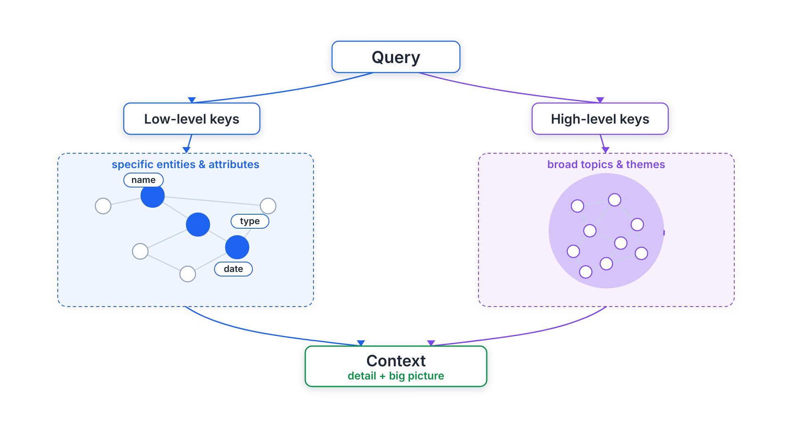
Those two levels combine into five mode values you pick per request: local (low-level
only), global (high-level only), hybrid (both), naive (plain
vector search, no graph), and mix (knowledge graph fused with vector retrieval — the recommended
mode, especially with a reranker). Under the hood, LightRAG matches local keywords to candidate entities and
global keywords to relations, then expands with the graph's one-hop neighbours for higher-order relatedness.
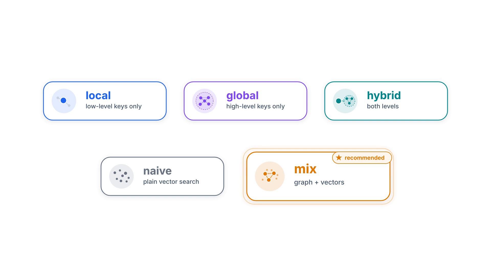
mix blends graph and vectors and is the recommended default
GraphRAG builds community summaries and traverses them with hundreds of API calls and hundreds of thousands of
tokens. LightRAG retrieves with a single API call using fewer than a hundred keyword tokens.
Indexing costs scale linearly — roughly total_tokens / chunk_size LLM calls — and that is the whole
pitch: simple and fast.
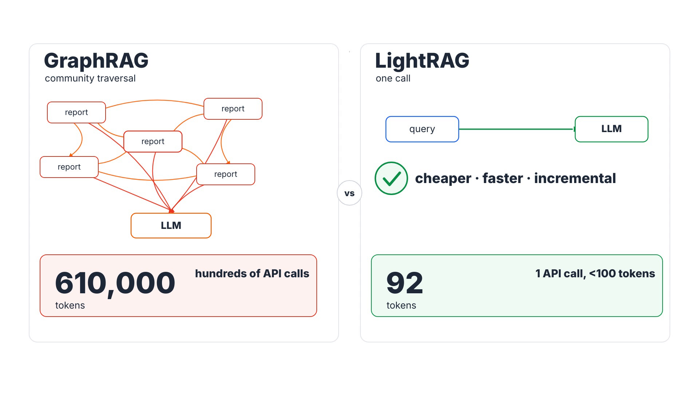
Updates are just as cheap. New documents go through the same indexing steps, then their nodes and edges merge into the existing graph as a union — no full reprocessing, and old connections stay intact. That is the design behind LightRAG’s incremental pipeline and storage migrations.
I deployed LightRAG as its API server (which also serves a web UI) wired entirely to cloud APIs, so
no GPU is needed. Extraction makes the most LLM calls, so it uses the cost-effective
gpt-5-mini; keyword extraction uses the cheapest tier, gpt-5-nano; the final, user-facing
answer uses the flagship gpt-5.5. Embeddings use text-embedding-3-small at 1536
dimensions. Vectors live in Qdrant; the key-value store, graph and document status stay in local
files.
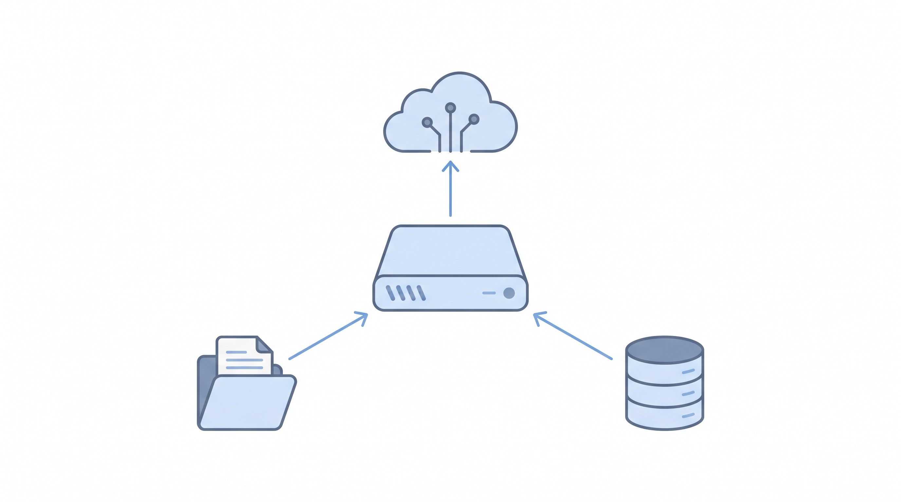
Installation is six commands:
# 1. Pin tools + create the virtual env (asdf + uv)
asdf local python 3.12.8 && asdf local uv 0.8.8
uv venv .venv --python "$(asdf which python)" && source .venv/bin/activate
# 2. Install LightRAG with the API server + Qdrant client
uv pip install -e ".[api]" "qdrant-client>=1.11.0,<2.0.0"
# 3. Build the WebUI (not shipped pre-built)
( cd lightrag_webui && bun install --frozen-lockfile && bun run build )
# 4. Start the Qdrant vector store
docker start qdrant-demo
# 5. Configure .env (models, EMBEDDING_DIM=1536, QDRANT_URL, WORKSPACE)
# 6. Launch the server + WebUI on port 9621
lightrag-server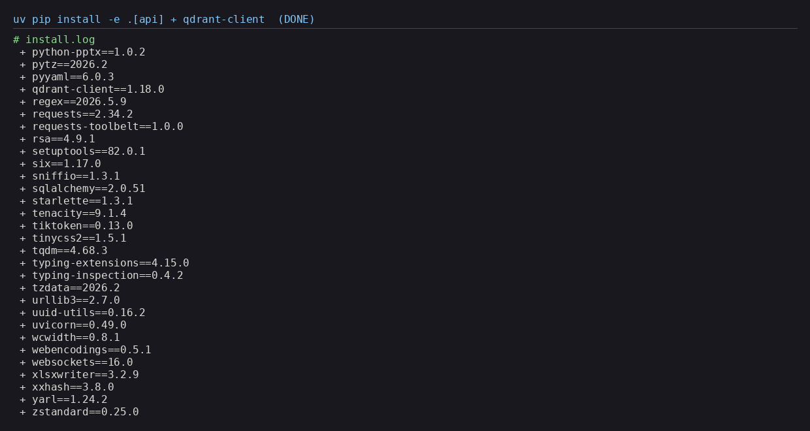
lightrag-hku with the OpenAI and Qdrant clients, and no torch/CUDA (API-only)GET /v1/models first saved a broken config — I selected only IDs the key could
actually serve.
From Python it is four steps, with one rule that trips everyone: you must await
rag.initialize_storages() before any insert or query, or you get an AttributeError /
KeyError. Insert text (which triggers extraction and embedding), query with a mode like
mix, and finalize on exit.
import asyncio
from lightrag import LightRAG, QueryParam
from lightrag.llm.openai import openai_complete_if_cache, openai_embed
async def main():
rag = LightRAG(
working_dir="./rag_storage",
llm_model_func=openai_complete_if_cache,
embedding_func=openai_embed,
)
await rag.initialize_storages() # REQUIRED before any insert/query
await rag.ainsert("LightRAG builds a knowledge graph from your docs.")
answer = await rag.aquery(
"What does LightRAG build?",
param=QueryParam(mode="mix"),
)
print(answer)
await rag.finalize_storages()
asyncio.run(main())
Running the server, a quick health check confirms the wiring: the web UI is available, the LLM is
gpt-5-mini, the embedding model is text-embedding-3-small, and the vector store is
Qdrant — namespaced to its own WORKSPACE so it creates its own collections and leaves any
existing ones untouched.
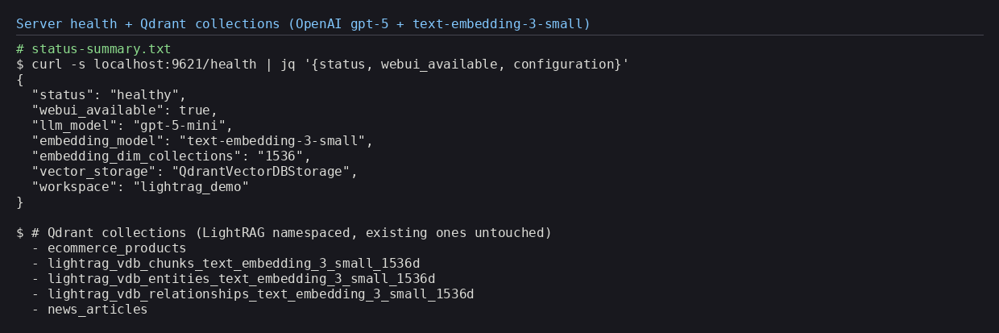
Then a full round-trip: insert a short document, ask a question in mix mode, and the flagship
gpt-5.5 writes a grounded answer with a citation back to the source — over retrieval that found
14 entities, 13 relations and the relevant chunk.
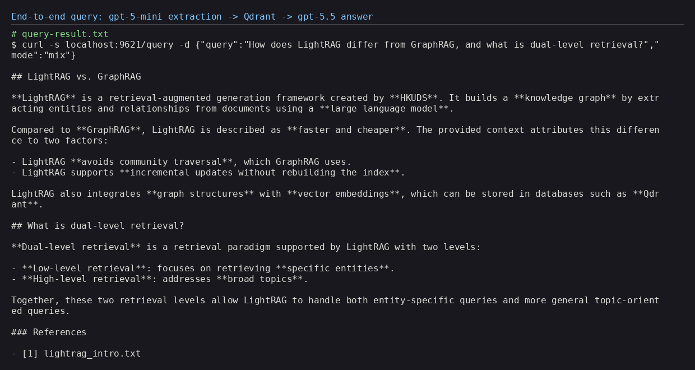
mix mode — a grounded answer from gpt-5.5 with a citationThe most satisfying part is seeing the graph LightRAG extracts. From a single short document it produced 14 nodes and 13 edges, centred on the LightRAG node and the Dual-Level Retrieval Paradigm node — and the counts match the extraction logs exactly. The built-in web UI renders it interactively, alongside tabs for documents, retrieval and the API.
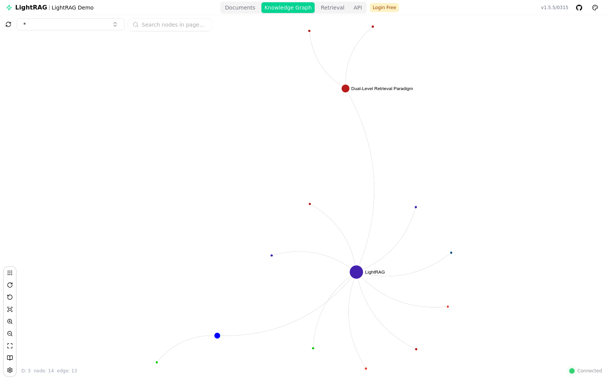
Real installs are never perfectly smooth. The sneakiest issue: every query returned “no relevant
context found” even though retrieval was clearly succeeding and finding 14 entities. The real error
was downstream — gpt-5.5 returned an HTTP 400 because the reasoning-effort value
minimal is not supported by that model. Since the setting applies to every role at once, and
gpt-5-mini accepts minimal but gpt-5.5 does not, the fix was the tier both
share:
gpt-5.5 rejects reasoning_effort=minimal (HTTP 400).
Fix: set OPENAI_LLM_REASONING_EFFORT=low — the only tier supported by both
gpt-5-mini and gpt-5.5.
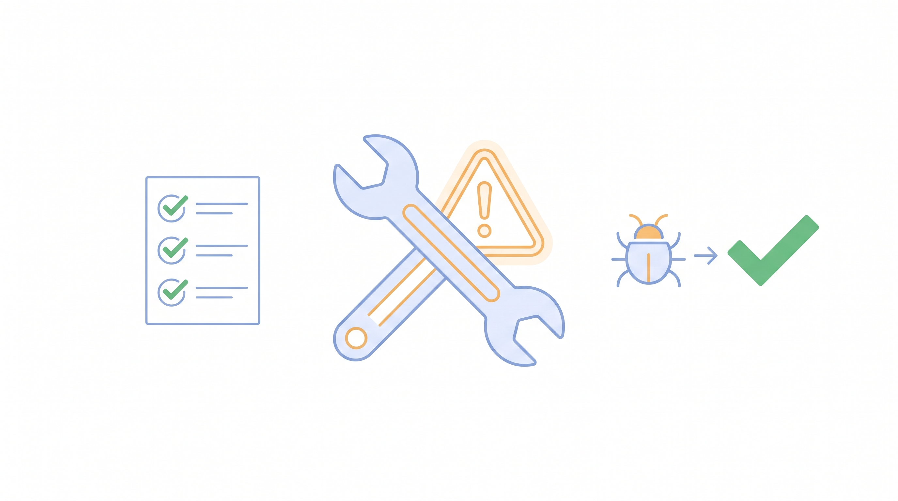
Three more gotchas:
/v1/models before writing config.bun run build step, then restart the
server so it mounts the assets.WORKSPACE name so LightRAG
keeps its collections cleanly separated from any existing data.
LightRAG hits a genuinely useful sweet spot: the comprehensiveness of a knowledge graph without GraphRAG’s
token bill or its full-rebuild updates. The dual-level retrieval is an elegant way to serve both pointed and
conceptual questions from one index, and the OpenAI + Qdrant deployment is refreshingly light — no GPU, just
API calls and a vector store. The rough edges are operational, not conceptual: validate your model IDs, build the
web UI, and mind the cross-model reasoning_effort setting.
HKUDS/LightRAG — reference implementation, API server and web UI.gpt-5-mini, gpt-5-nano, gpt-5.5 and text-embedding-3-small. Vector store: Qdrant.